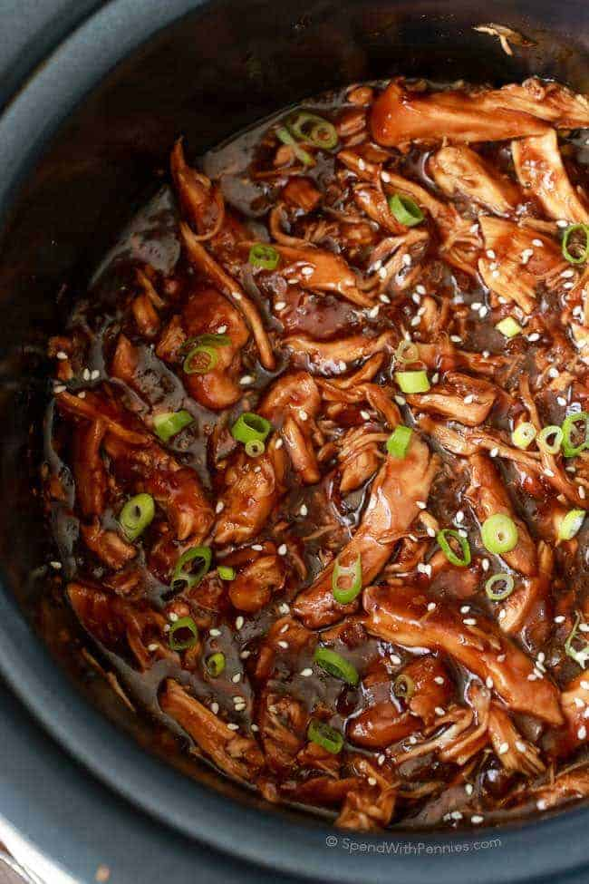

Slow Cooker Honey Garlic Chicken

Description
As a busy young adult with a full time job, sometimes I can't even fathom coming home and cooking a full meal at the end of the day. It's often around 5 o'clock in the afternoon when the craving for take-out starts to hit, but I know that I deserve a yummy and nutritional meal at the end of a long day. This is where my favorite kitchen gadget comes to the rescue - my slow cooker! By setting this baby to cook on low in the morning, I can come home after work knowing that I have a good meal waiting for me. But the slow cooker doesn't stop there! You can also set it on high after work, and have a low effort dinner ready in just 2 hours.I probably make this slow cooker honey garlic chicken at least once a month. It's constantly in my rotation, it's that good! All it takes is just a few pantry staples, some chicken breast, and boom! Perfection.
Ingredients
- 1 1/2 lbs boneless skinless chicken breast or chicken thighs
- 1/3 cup low sodium soy sauce
- 1/3 cup honey
- 2 tbsp tomato paste
- 2 tsp sriracha or hot sauce of your choice
- 4 cloves of minced garlic
- 1 tbsp rice vinegar
- 2 tbsp of cornstarch
- Choice of rice for serving
- Chopped green onion for serving
Steps
- Place chicken in the bottom of a 6-quart or larger slow cooker.
- In a separate bowl, whisk together the soy sauce, honey, tomato paste, sriracha, garlic, and rice vinegar. Pour over the chicken.
- Cover and cook on LOW for 4 to 5 hours or HIGH for 2 to 3 hours, until the chicken reaches an internal temperature of 165 degrees F. Optional: flip the chicken halfway through to coat both sides with sauce.
- Remove the chicken from the slow cooker and let it cook slightly. Whisk the cornstarch into the remaining liquid in the slow cooker. Cover and cook on HIGH for 15 minutes, until the sauce thickens, stirring occasionally. If you want the sauce to be thicker, cook for 15 additional minutes.
- Shred the chicken and place it back into the slow cooker. Stir the sauce and chicken together.
- Serve over rice and top with green onions.